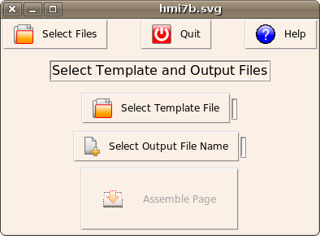
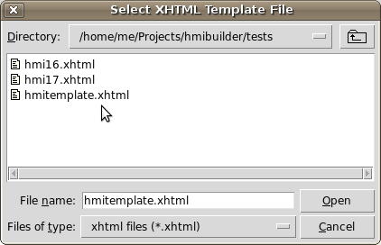
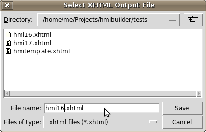
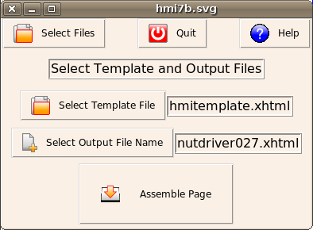

MBLogic
for an open world in automation
MBLogic
for an open world in automation
Assemble Page
Assembling Web Pages
This step combines the SVG HMI drawing with a web page template to create the finished HMI web page by doing the following:
- It scans the SVG drawing for all the widgets.
- It then takes the parameters you have edited, and combines them with additional information about each widget. This additional information is part of the widget definition and so also present in the drawing.
- This information is then used to generate Javascript code which is used to activate buttons and to animate output widgets. This information is then inserted into a copy of the HMI web page template.
- The layers, alarms, and events lists which were selected as part of a previous step are inserted into a copy of the HMI web page template.
- All the address tags which are referenced by any of the widgets are collected into a list and used as the "read list", which tells the HMI web page which address tags to request from the HMI server. This "read list" is inserted into a copy of the HMI web page template.
- The finished HMI web page template is saved to disk. This file can be moved to the HMI directory and used as the new HMI web page.
Steps
- Click on "select template file".

- Select the web page (x)html file you wish to use as an HMI web page
template.

- Click on "select output file" and enter the name that you wish to use
for the output HMI web page file that or select the name of an existing
file. If you select the name of an existing file, that file will be
overwritten by the finished web page.

- When you have selected both the template file and the output file
name, the "assemble page" button will be enabled. Click on the "assemble
page" button to create the finished HMI web page.
